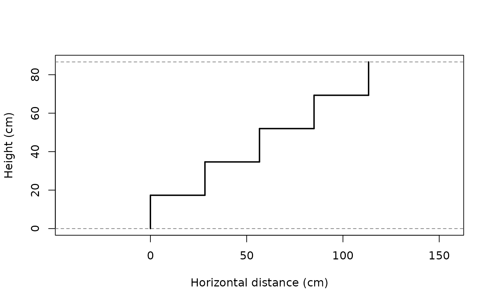

Computes the geometry of each riser by determining its horizontal position (the cumulative width of the preceding goings) together with its bottom and top elevations.
Value
Return a data.frame with one row per riser and the following columns:
step, x_riser, y_bottom, y_top,
going, x_going_end, and going_type.
Details
Two going configurations are supported:
A vector of length
n_risers - 1, corresponding to a conventional stair where the last riser reaches the landing directly, with no going beyond it.A vector of length
n_risers, corresponding to a stair with an additional landing going after the last riser, at the same elevation as the destination landing.
The returned geometry is intended to be plotted directly using
segments() in base R:
Riser i (vertical): from
(x_riser, y_bottom)to(x_riser, y_top).Going i (horizontal), when present: from
(x_riser, y_top)to(x_going_end, y_top).
Examples
geometry <- build_geometry(n_risers = 5, step_height = 17.33, goings = rep(28.33, 4) )
geometry
#> step x_riser y_bottom y_top going x_going_end
#> 1 1 0.00 0.00 17.33 28.33 28.33
#> 2 2 28.33 17.33 34.66 28.33 56.66
#> 3 3 56.66 34.66 51.99 28.33 84.99
#> 4 4 84.99 51.99 69.32 28.33 113.32
#> 5 5 113.32 69.32 86.65 NA NA
plot(geometry)
